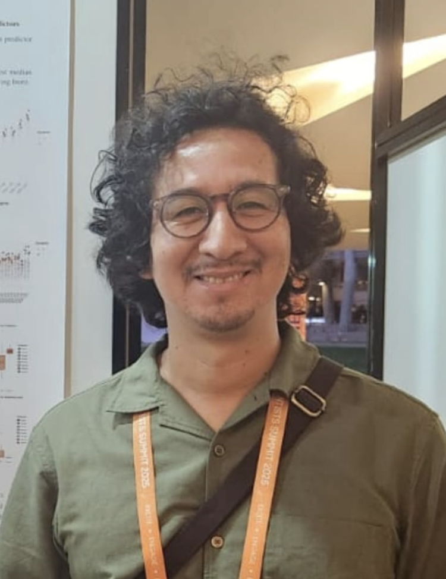

Miguel R. Pebes-Trujillo
Email: mpebes@ntu.edu.sg
Office: Nanyang Technological University, Research Techno Plaza (RTP), X-Frontiers Block, Level 6, 50 Nanyang Ave, Singapore 639798.
Curriculum Vitae
|
 |
I am a Research Fellow in Artificial Intelligence and Data Science in the School of Materials Science and Engineering at
Nanyang Technological University, Singapore. I received my PhD in Statistical Science from Indiana University
Bloomington (2023), where I also Ph.D.-minored in Complex Networks and Systems, and served as a Visting Assistant
Professor at the Department of Statistics (2022-2023). I received my M.S. in Statistics and B.S. in Computer Science from
the Pontifical Catholic University of Peru.
My research integrates statistical modeling and computational inference methods for understanding and controllability of real-world systems.
I have worked in various domains including telecommunications, fraud detection, pattern-change detection, mobility analysis,
risk management, hierarchy and network inference, and currently remote sensing and precision agriculture.
My technical core includes Bayesian modeling, Bayesian Nonparametrics, Markov Chain Monte Carlo algorithms, and
diachronic applications of these methods or Bayesian Reinforcement Learning.